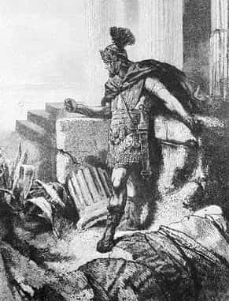
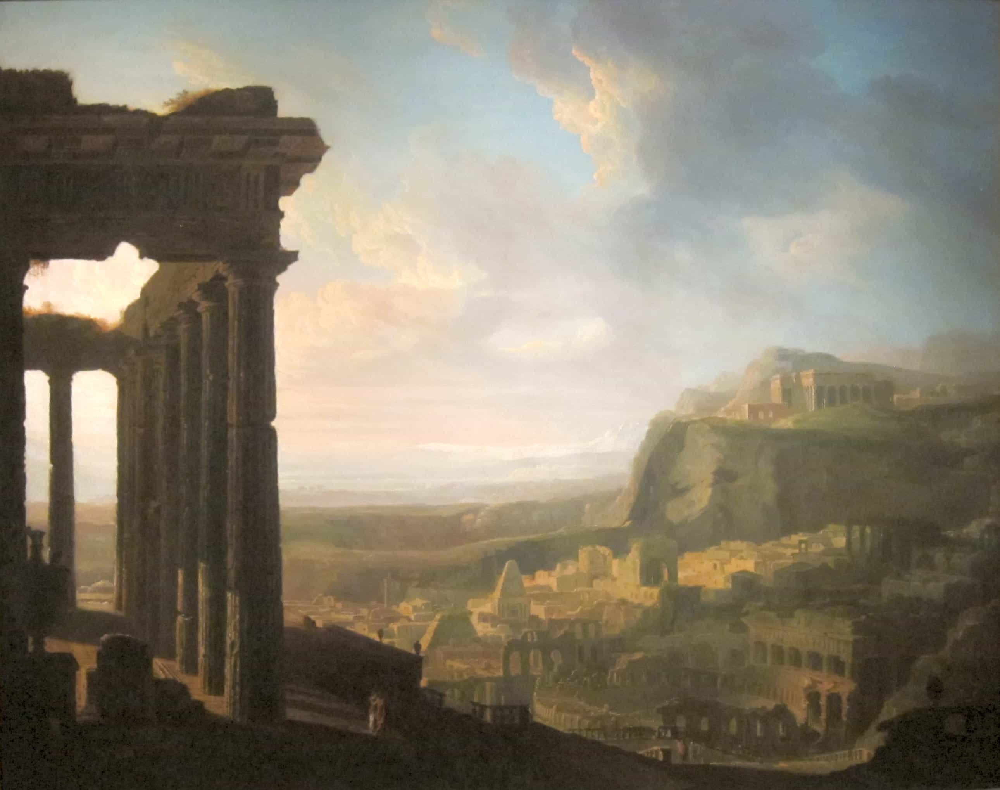

Libertas is a young bard traveling along the endless road to self-improvement and recounting his adventures. You can follow him on Twitter.


Quintus recently sent me a review copy of his translation of Sallust’s Conspiracy of Catiline and War of Jugurtha. Both chronicles take place during a turbulent period in Rome’s history. It was an epoch when the glories of overseas imperialism caused new social strains at home. The republican constitution, long the bedrock of Roman society, was collapsing under the avarice and jealousy of a senatorial elite consumed by the new wealth and luxury it had reaped.
Sallust was harshly critical of this process and the nobility. He blamed them for the fracturing of the republic and its descent into civil wars, and this is reflective in both the Conspiracy of Catiline and War of Jugurtha.
Several of the speeches, from Memmius and Marius in particular, ring so contemporary that one would be forgiven for thinking that they are living people railing against the Washington swamp. When attacking the Roman elite and its willful misconduct of the war against Jugurtha, Marius says thus:
My friends, compare me – a “new man” – with those arrogant nobles. What they are used to hearing or reading, I have either seen first-hand or have done myself. What they have gathered from books I have learned myself while serving as a soldier. Consider now whether you believe actions are worth more than words. They sneer at my common origins, and I at their uselessness. Before me lies my own fate; before them lies their disgrace. I believe there exists one universal nature for all men, and that the bravest has the best pedigree. And if the fathers of Albinus and Bestia could be asked whether they would prefer to have begotten me or them, what do you think their answer would be if they truly wanted the best offspring?
If by right they look down on me, let them also look down on their own ancestors whose nobility was based, like mine, on masculine virtue. They resent my occupying the office of consul: then let them resent my hard work, my integrity, and the dangers I have risked! For it is though these things that I have achieved my office. Men truly corrupted by arrogance live like this; it is as if they think nothing of your honors. But they seek these honors just the same, as if they lived their lives honorably. Delusional are the people who expect that these two completely different things are equal: the delights of idleness and the rewards of virtue. And when they deliver speeches in the senate or to you, they mostly deliver orations praising their ancestors. They think themselves more courageous by recalling these famous exploits. But it is just the opposite. The more distinguished their ancestors’ lives are, the more pathetic is their own indolence.

If there’s a more biting polemic that can describe our time, I’m not sure where it can be found.
Quintus worked hard on his translation to make Sallust’s language burn as brightly in English as it did in the ancient Latin in which he composed. And good as Sallust’s polemics are to read, greater still are his exhortations to virtue in men. As he says at the very start:
All men who seek to be better than the animals ought to exert themselves with the greatest efforts, lest they pass their lives in silence as if they were beasts of burden, which Nature has conditioned to be prostrate and subservient to their stomachs. All our powers are situated in our minds and bodies; we make use of the mind more for control, and the body for service. One of these we hold in common with the gods, and the other with the wild beasts. For me it seems more proper to seek glory through one’s natural character than through the efforts of naked force and, since this life that we delight in is so short, to fashion a legacy for ourselves that is as lasting as possible. For glory derived from riches and appearances is transitory and brittle, but masculine virtue is pure and eternal.
These are the words that sum up why Quintus has worked so hard to translate Sallust and Cicero, and why the Classics are so important to reclaim.

Ancient historians, such as Sallust, Livy, and Plutarch, sought to inculcate their readers with lessons on fortitude and virtue. This is a stark contrast from today’s educational regime, which seeks largely to cram students with as many facts as possible (most of which they’ll forget anyway), and then teach them to hate themselves or to view themselves as victims on the side.
For the ancient historians, the inculcation of good character was just as important as understanding the facts. This may certainly have skewed their coverage, but even Thucydides, the most thoroughly modern of the ancient historians, stated at the start of his great history that the events of which he was writing were unprecedented, and that his work was “not designed to meet the taste of an immediate public, but was done to last forever.”
Thucydides’ account is full of character lessons provided in the cases of Pericles and the notorious and destructive arrogance of Alcibiades, who championed the ill-advised Sicilian expedition that crushed the power of Athens. The Peloponnesian War was so notable and so big in the mind of Thucydides, that he thought it crucial for the education of all future generations of men.
These sorts of lessons are too detached from modern education. As Quintus writes at the start of his translation of Sallust, the Classics had previously been given a central place in education, but that has declined precipitously since the middle of the 20th century, and I don’t think it’s a coincidence that since then, we have witnessed such phenomena as the mandated gender-bending of children and the invited invasion of Europe.
A civilization that has lost touch with its past and has no pride in itself or fortitude in its people will embrace all sorts of strange, destructive ideas, a phenomenon with which Sallust himself was all too familiar:
But when the republic grew through labor and the application of justice, and great kings had been subdued in war; when barbarous peoples and mighty nations were brought to heel; and when Carthage, jealous of the Roman Empire, was destroyed root and branch and every land and sea lay open; then, at last, Fortune began to vent her disfavor and all began to become turbulent. Those who had easily borne labors, dangers, insecurity and bitterness now found that leisure and riches – so desirable in some situations – were instead a burden and source of woe. Thus first the love of money grew, and then the love of power as well; these things were essentially the building blocks of all evils. Greed overturned honesty, good faith, and other positive virtues; in their place it nurtured arrogance, cruelty, neglect of religious duty, and the idea that everything could be bought for a price.
Worldly ambition compelled many to become deceitful: to have one sentiment in the heart yet a different one ready on the tongue, to make friends and enemies not on an objective basis, but on an estimation of monetary convenience; and to display a good face rather than a good character. These tendencies grew little by little, occasionally to be punished. Afterwards, when the infection spread like a contagion, the state was transformed, and a government that was among the most just and strong became inhuman and unbearable.
Return of Kings recently featured a post on moral relativism, a foundation of modern leftist thought. It should come as no surprise that as the Classics have declined in education, moral relativism rose. Cicero, whose On Duties was a standard school text and which Quintus also recently translated, anticipated moral relativism in some ways, and has a clever take on it:
When a fissure opened up in the earth after a series of rains, Gyges descended into it. There he found the body of a dead man of huge proportions, with a gold ring on his finger. He removed the ring and put it on his own finger. When he turned the ring towards the palm of his hand, he was seen by no one, while he himself was able to see everything. When he rotated the ring back to its original position, he again was able to be seen by other people.
So, taking advantage of the opportunity created by this magic ring, he seduced the queen of Lydia and, with her as his accomplice, murdered the king of that country. He destroyed all whom he thought might oppose him, and neither was anyone able to see him as he went about these crimes. Thus, with the unexpected help of the ring he rose to become King of Lydia. But if a wise man had such a ring, he would no more think he could commit crimes than if he did not have it. For moral goodness and not secrecy for evil deeds is what good men seek.
Herein lies the power of the magic ring concept and of this little fable: if no one were able to know or suspect when you do something for the sake of riches, power, domination, or sensual pleasure, and if such an action could forever be hidden from gods and men, would you do it?
Introducing this little thought experiment is like torture to them [the doubters]. If they answer that they could indeed commit an evil act with impunity (i.e., to do what is most expedient for them), then they are basically admitting that they have bad characters. But if they deny that they could commit an undetected evil deed, then they are, in effect, conceding that all morally wrong things must without exception be avoided.
Cicero as Consul indicts Catiline in front of the Senate. What he failed to understand was that Catiline was a symptom of a failing system.
With texts like this now out of the schools, it’s little wonder that imagination has replaced reality, that hysteria and censorship has replaced debate, and that the feelings of groups competing in the victim Olympics have replaced the rights and obligations of free citizens in a republic with a common heritage, character, and identity. It is also little wonder that a generation of gender-bending freaks has arisen before our eyes and welcomes their own invasion and overthrow.
I can’t be certain, but I think it was in no small measure that, because I was exposed to the Classics somewhat as a teenager, I avoided the fate of so many others of my generation. It is long since time that these texts and authors are reintroduced as one of the foundations of a young man’s education. Quintus is doing a good job in this, and I recommend translations such as Sallust.
Read Next: Why Men Should Read The Works Of Sallust